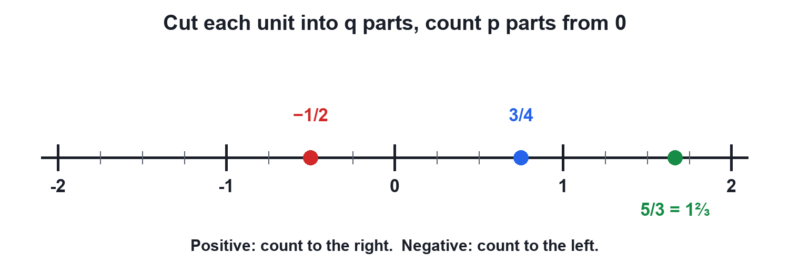
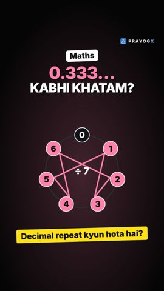

Chapter 1 · Mathematics
Rational Numbers on the Number Line
Video not playing? Watch on Instagram · YouTube
To place p/q, cut each unit into q equal parts and count p parts from 0: right for positive, left for negative.
Download the short notesPDF, 93 KB · solved examples, practice set and answer key Up next in this chapter
 Equivalent Fractions and Comparing Rational Numbers1 slice of 2 or 4 slices of 8: who ate more pizza? Learn equivalent fractions, the LCM trick for comparing, and why −3/4 > −5/6.Mathematics · simulation
Equivalent Fractions and Comparing Rational Numbers1 slice of 2 or 4 slices of 8: who ate more pizza? Learn equivalent fractions, the LCM trick for comparing, and why −3/4 > −5/6.Mathematics · simulation
Key points
- Denominator q = how many equal parts in each unit.
- Numerator p = how many parts to count from 0.
- Positive → count right; negative → count left.
- Between any two rationals there is another: their average (a + b)/2.
Cut, then count

- Draw the line and mark 0, 1, 2, … (and −1, −2, … if needed).
- Cut each unit into q equal parts (q = denominator).
- From 0, count p parts: right if positive, left if negative.
- Where you stop is p/q.
Worked examples
| Number | Parts per unit | Count from 0 | Where it lands |
|---|---|---|---|
| 3/4 | 4 | 3 parts right | Between 0 and 1, just before 1 |
| 5/3 | 3 | 5 parts right | Between 1 and 2 (5/3 = 1⅔) |
| −1/2 | 2 | 1 part left | Halfway between 0 and −1 |
Density of rational numbers
Between 1/2 and 3/4 lies their average (1/2 + 3/4)/2 = 5/8; between 1/2 and 5/8 lies 9/16; and so on forever. There are infinitely many rationals between any two.
Common mistakes: cutting the whole visible line instead of each unit; counting tick marks instead of the gaps; putting −1/2 to the right of 0.
Try it yourself
Goal: Place any fraction on the number line by cutting each unit into q parts and counting p of them.
- Set p and q with the + and − buttons (or pick an example).
- Press Cut and count: each unit is cut into q parts, then p parts are counted from 0.
- Read where it lands and between which integers it lies.
- Try a negative and an improper fraction.
Quick quiz
5 questions. Choose an answer for each, then submit to see your score and the explanations.
More from Number Systems
 Natural, Whole, Integers and Rational NumbersEach new family of numbers answers a question the old one could not, and every family lives inside the next: N ⊂ W ⊂ Z ⊂ Q.Mathematics
Natural, Whole, Integers and Rational NumbersEach new family of numbers answers a question the old one could not, and every family lives inside the next: N ⊂ W ⊂ Z ⊂ Q.Mathematics
Terminating and Recurring Decimals1/4 = 0.25 stops, but 1/3 = 0.333… never does. The remainders of long division decide: a remainder of 0 stops it, a returning remainder makes it repeat.Mathematics · simulation